|
4-4-2
|
Bosnia-Herzegovina | 3 | - | 1 | Qatar |
4-3-3
|
| HT 2-1 | ||||||
|
FIFA World CupWednesday 24 June 2026
|
||||||
- Venue
- Seattle Stadium
- Attendance
- 66,925
- Referee
- Jesús Noel Valenzuela Sáez
Goal29'
K. Alajbegović
Assist: I. Bašić
Own goal34'
Mahmud Abunada
- 2
Substitution46'
I. Šunjić
B. Tahirović
A. Malić
A. Memić
Substitution63'
N. Katić
D. Hadžikadunić
Substitution64'
E. Džeko
E. Mahmić
Goal80'
E. Mahmić
Assist: D. Hadžikadunić
Substitution82'
K. Alajbegović
D. Burnić
Yellow card82'
E. Mahmić
Whistle45+6'
45+6'
Goal42'
Hassan Al Haydos
Assist: Edmílson Junior
Substitution46'
Jassem Gaber
Abdulaziz Hatem
Substitution56'
Hassan Al Haydos
Ahmed Al Ganehi
Substitution72'
Karim Boudiaf
Almoez Ali
Yellow card78'
Ahmed Fathy
- 2
Substitution79'
Edmílson Junior
Ahmed Alaa
Ahmed Fathy
Mohammad Manai
Bosnia-Herzegovina | |
|---|---|
Goalkeeper | |
| 1 | N. Vasilj |
Defender | |
| 5 | S. Kolašinac |
| 18 | N. Katić 63' |
| 21 | S. Radeljić |
| 24 | A. Malić 46' |
Midfielder | |
| 13 | I. Bašić |
| 14 | I. Šunjić 46' |
| 19 | K. Alajbegović 29'82' |
| 20 | E. Bajraktarević |
Forward | |
| 10 | E. Demirović |
| 11 | E. Džeko 64' |
Substitutes | |
| 3 | D. Hadžikadunić 63' |
| 6 | B. Tahirović 46' |
| 15 | A. Memić 46' |
| 17 | D. Burnić 82' |
| 26 | E. Mahmić 64'80'82' |
Qatar | |
Goalkeeper | |
| 1 | Mahmud Abunada 34' |
Defender | |
| 2 | Pedro Miguel |
| 4 | Issa Laye |
| 16 | Boualem Khoukhi |
| 18 | Sultan Al Brake |
Midfielder | |
| 5 | Jassem Gaber 46' |
| 12 | Karim Boudiaf 72' |
| 20 | Ahmed Fathy 78'79' |
Forward | |
| 8 | Edmílson Junior 79' |
| 10 | Hassan Al Haydos 42'56' |
| 11 | Akram Afif |
Substitutes | |
| 6 | Abdulaziz Hatem 46' |
| 7 | Ahmed Alaa 79' |
| 17 | Ahmed Al Ganehi 56' |
| 19 | Almoez Ali 72' |
| 26 | Mohammad Manai 79' |


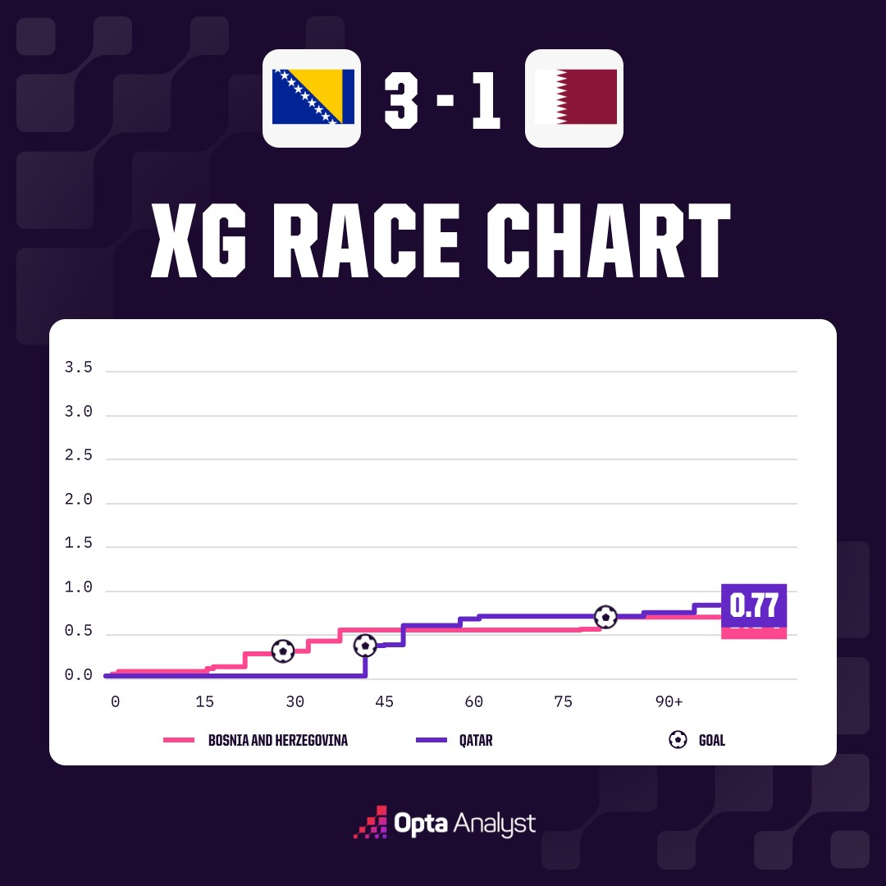
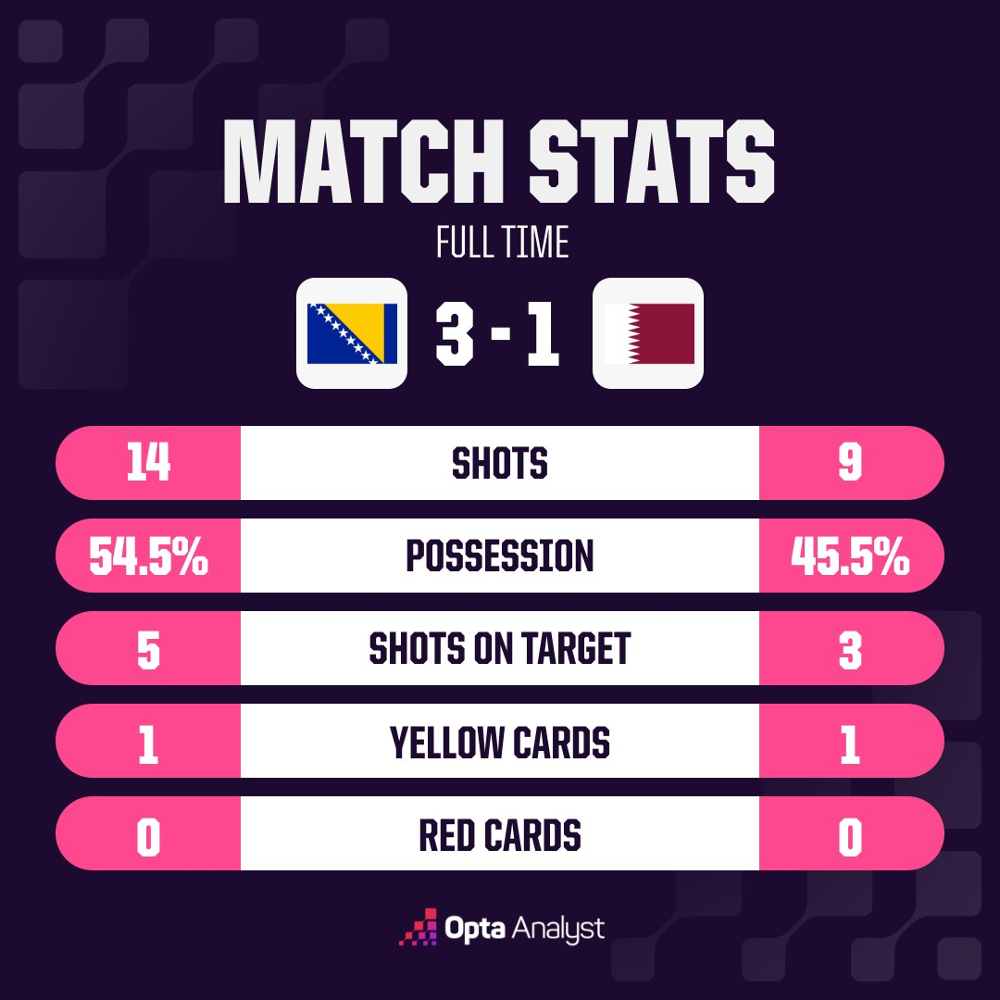
98'
Qatar have failed to win in their last 6 games in the FIFA World Cup, their longest winless streak in the competition (since at least 1965/1966).
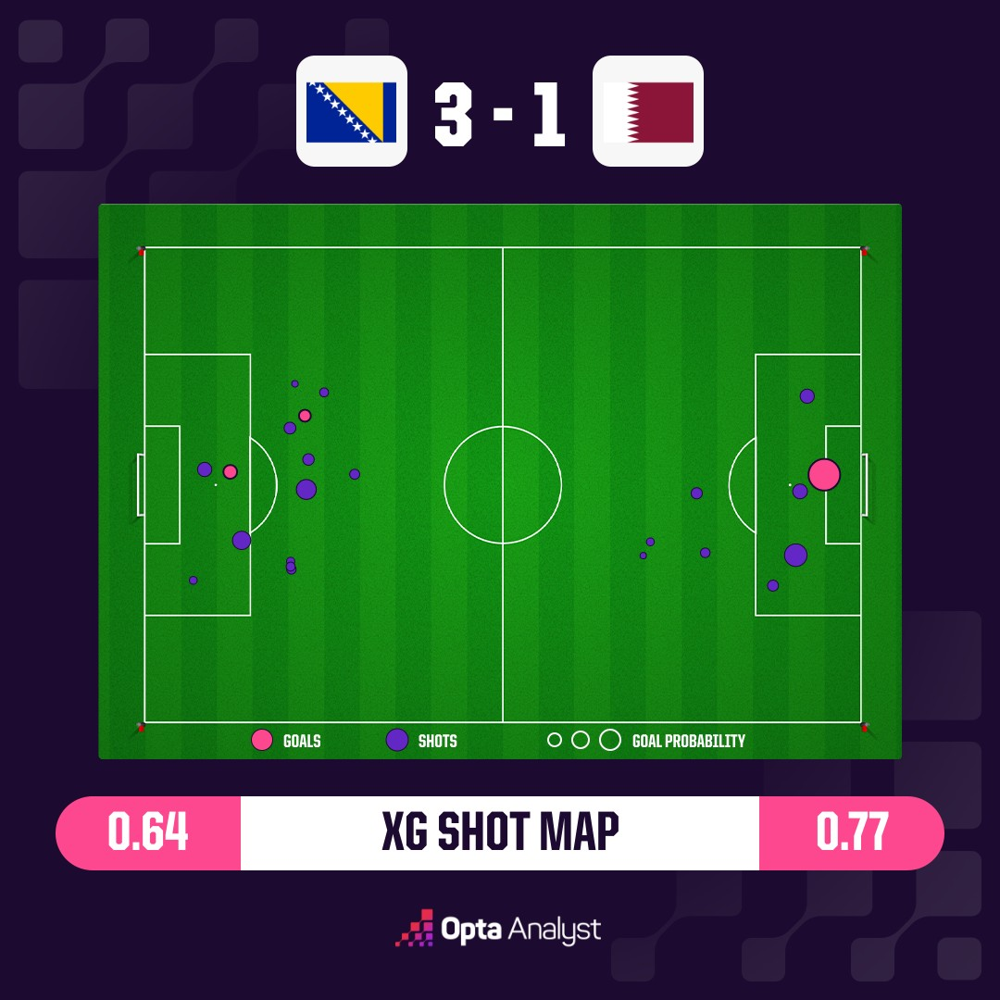
90+7'
That's it! The referee blows the whistle and we have reached full-time. The final score at Seattle Stadium is Bosnia 3-1 Qatar.
90+6'
There is plenty of possession for Qatar, with 65.00% compared to Bosnia 35.00% in the last 15 minutes. However, Qatar have not been able to turn that dominance of the ball into a goal.
90+6'
Free-kick! A foul from Ermedin Demirović on Issa Laye. It is well away from Bosnia’s goal, so it is unlikely to result in a chance for Qatar.
90+4'
A foul from Mohammad Manai on Esmir Bajraktarević sees Bosnia win a free-kick, but it is not in a dangerous position, so Qatar should be confident they can defend it easily enough.
90+4'
CLOSE! Almoez Ali gets into a decent shooting position inside the Bosnia area, and manages to find space to get an effort off. However, Nikola Vasilj is equal to it.
90+4'
Qatar win a corner after Pedro Miguel sees a shot diverted wide by Nikola Vasilj. Can Qatar make this opportunity count, or will Bosnia defend this?
90+2'
The Bosnia defence steps up in time and there is a frustration for Akram Afif, who thought they were through until the flag goes up to signal offside.
90+2'
It's all hands on deck for Bosnia as they defend their lead, making a wave of critical blocks and clearances
88'
Mohammad Manai goes in on Ermedin Demirović and concedes a foul. The free-kick is not in a particularly dangerous area from Qatar’s viewpoint, though.
86'
MISS! The score remains 1-3, with Bosnia relieved after Qatar’s Ahmed Al Ganehi goes for goal but sends their attempt off target. Not one to write home about, that one.
85'
This could be a chance for Qatar, after Dennis Hadžikadunić fouls Ahmed Alaa, handing them a free-kick in a threatening area. A good set-piece from here could really test the Bosnia defense!
84'
Ahmed Alaa goes in on Ivan Bašić and concedes a foul. The free-kick is not in a particularly dangerous area from Qatar’s viewpoint, though.
82'
BOOKING! Yellow card for Ermin Mahmić, who is penalised for a foul. The referee waves away their remonstrations, and now they will have to be careful.
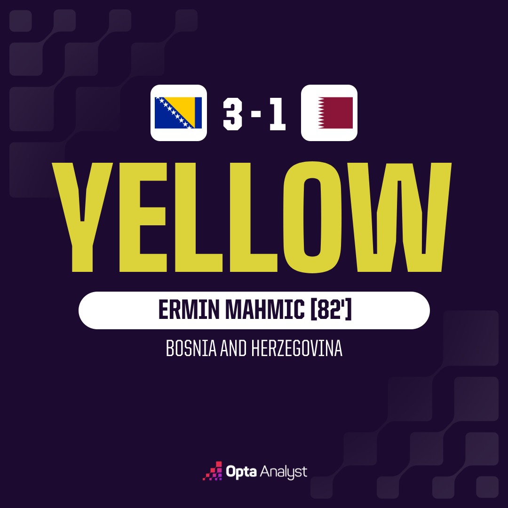
82'
Kerim Alajbegović’s match is over as Bosnia decide to make a substitution. Dzenis Burnić enters the field in what looks like a tactical change.
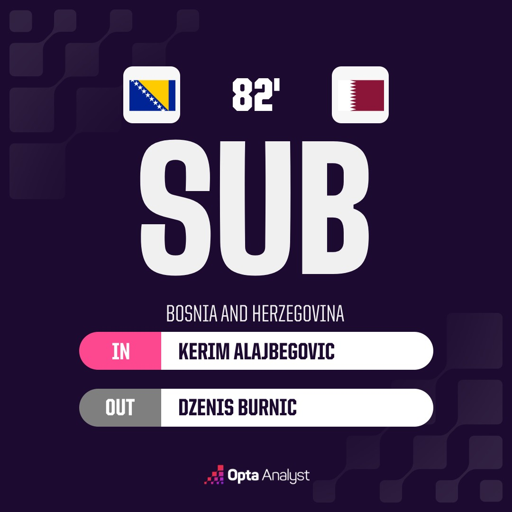
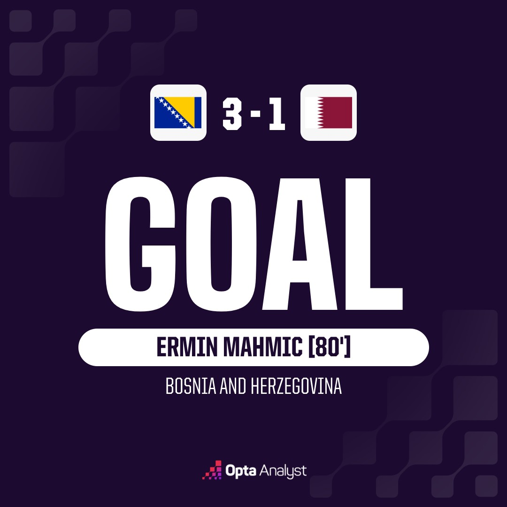
80'
Dennis Hadžikadunić has assisted his first goal in the 2026 FIFA World Cup.
80'
Bosnia-Herzegovina have attempted the last 5 shots in this game, Qatar last shot was taken by Akram Afif in the 60th minute.
80'
Bosnia-Herzegovina have scored 3 goals in the FIFA World Cup game for the first time since 25th June 2014 against IR Iran (W3-1).
80'
Ermin Mahmić has scored his second goal of the 2025 FIFA World Cup this edition, more than any other Bosnia-Herzegovina player.
80'
GOAL! Ermin Mahmić scores, and Bosnia are now well in front – surely they will go on and see this one out now? It seems a long way back for Qatar, with Bosnia well in control of this match.
80'
That might have been going in! A fantastic block from Abdulaziz Hatem, who gets in the way of a goal-bound effort from Stjepan Radeljić. Would the goalkeeper have been beaten? We will never know.
80'
BLOCK! An intervention from Boualem Khoukhi might have just prevented a goal, with the defending player getting in the way of an attempt from Ivan Bašić. Solid defending there!
79'
Corner now for Bosnia, as they see a shot from Esmir Bajraktarević deflected out of play for a set-piece. Qatar have some defending to do, here. Could this result in a big opportunity?
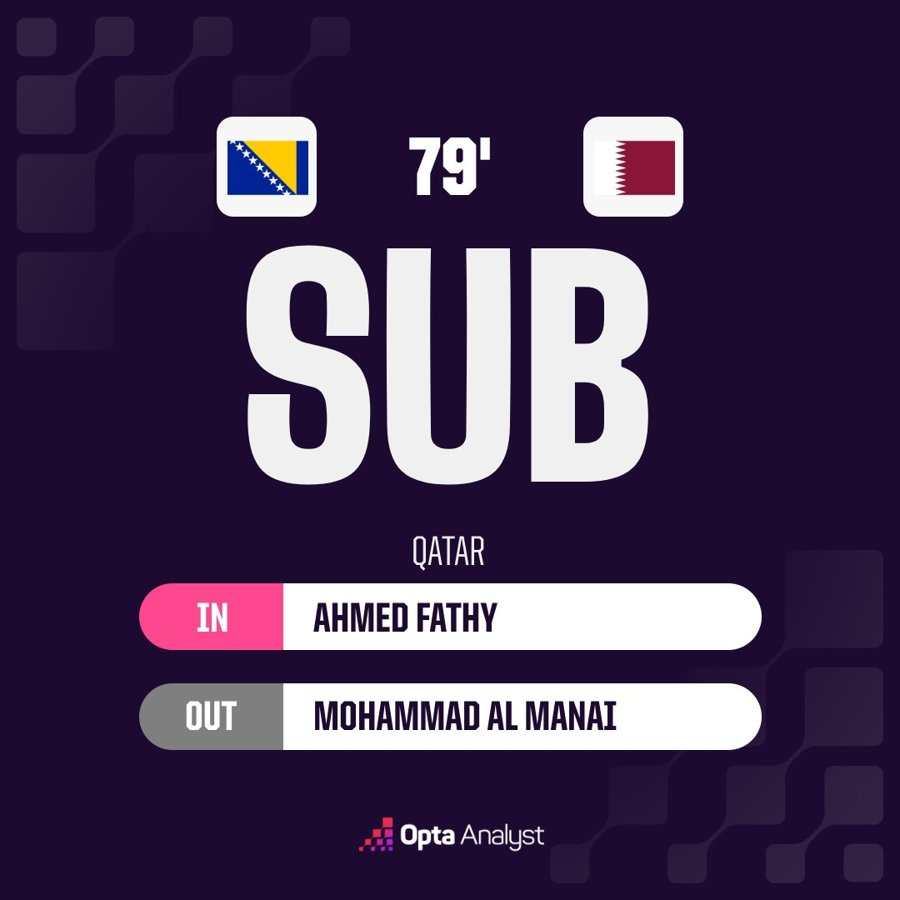
79'
A substitution for Qatar sees Ahmed Fathy replaced by Mohammad Manai. There does not appear to be any obvious sign of an injury, so that is a tactical switch.
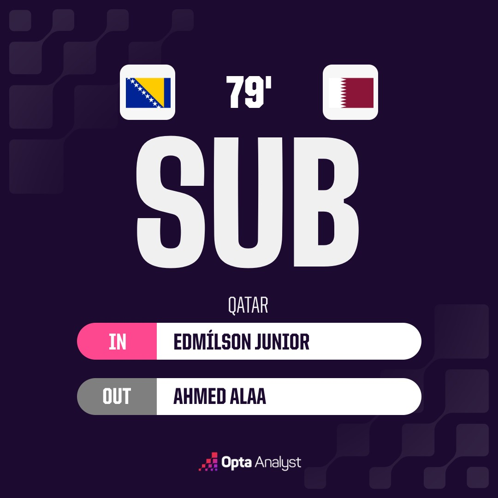
79'
The Qatar manager is looking to the substitutes’ bench, bringing on Ahmed Alaa in place of Edmílson Junior. Will the change make a difference? Let’s find out!
78'
BOOKING! Yellow card for Ahmed Fathy, who is penalised for a foul. The referee waves away their remonstrations, and now they will have to be careful.
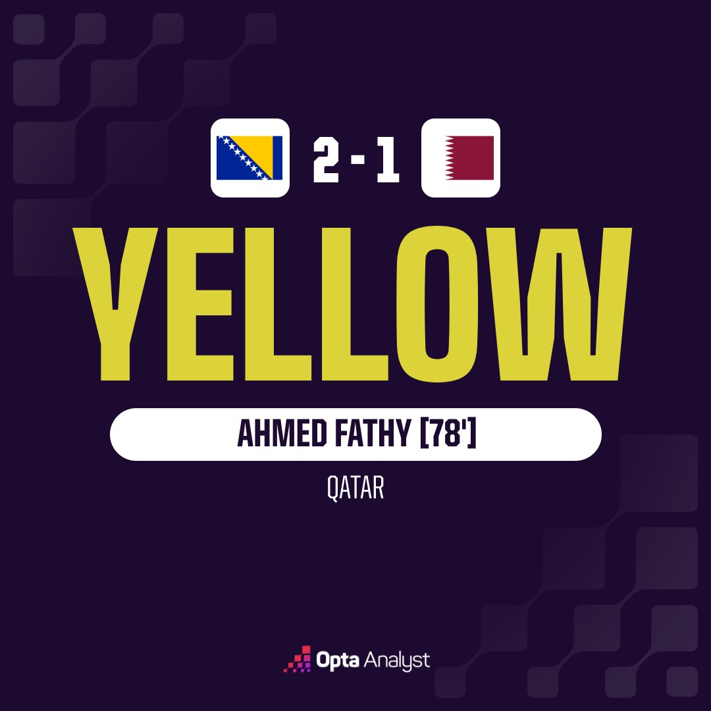
78'
A foul from Ahmed Fathy on Kerim Alajbegović sees Bosnia win a free-kick, but it is not in a dangerous position, so Qatar should be confident they can defend it easily enough.
77'
Kerim Alajbegović makes a run in behind but the Qatar defensive line were alert, and stepped up in time to catch them offside. That run just needed to be timed better.
77'
A rash challenge from Edmílson Junior, who sends Amar Memić tumbling, giving Bosnia a free-kick. It is not in a threatening position, but it gives them a chance to get back on the ball.
76'
A chance goes begging as Esmir Bajraktarević gets off a shot that does not hit the target. They might have done better with that one, but instead it is a goal-kick to Qatar.
76'
With 15 minutes left to play, plus stoppage time, it is Bosnia who have had the better of the possession, with 57.84%. Qatar, on the other hand, have had 42.16% of the ball so far.
73'
It’s backs to the wall now — Bosnia throwing everything into defending their advantage, with a flurry of crucial interventions.
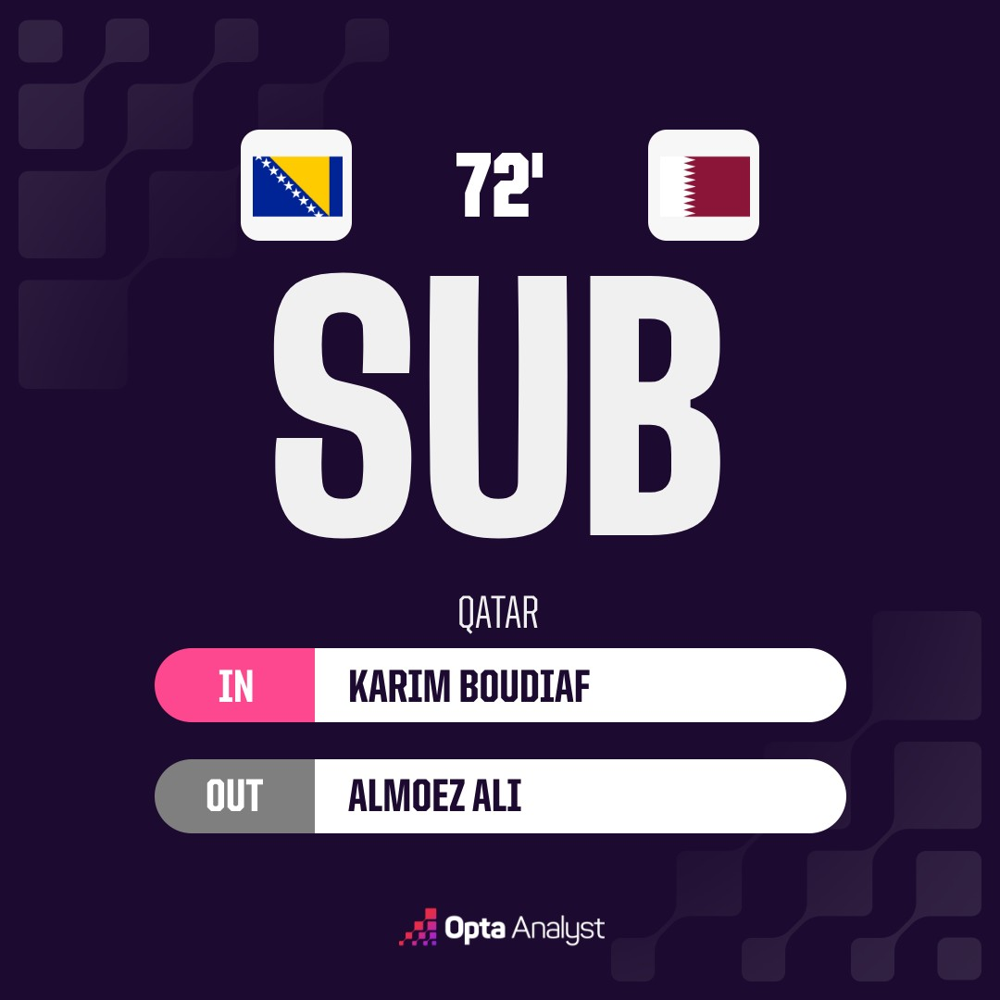
72'
Neither team has had a shot in the past 10 minutes, as this match just enters something of a down period. Qatar have seen more of the ball, with 79 per cent possession, but Bosnia are keeping them away from goal. There is still a chance the match will spark into life, though.
72'
Karim Boudiaf’s match is over as Qatar decide to make a substitution. Almoez Ali enters the field in what looks like a tactical change.
68'
It is a corner now to Qatar, with Bosnia somewhat hanging on here as they look to hold out for a positive result. Can Qatar make something of this set-piece opportunity?
68'
It’s backs to the wall now — Bosnia throwing everything into defending their advantage, with a flurry of crucial interventions.
68'
It has been 30 minutes since Bosnia-Herzegovina last attempted a shot in this game.
66'
Bosnia are having plenty of the ball, with 65.03% possession in the last 15 minutes. However, they have been unable to transfer that possessional dominance into a goal during that spell, and are not even generating shooting opportunities, so Qatar may not be unduly alarmed.
66'
This match is into the last 25 minutes now, and before it goes into the final stages, let’s check on the shots. There have been 15 in total – 9 from Bosnia, and 6 from Qatar. Of those attempts, 4 have hit the target – 3 from Bosnia and 1 from Qatar.
65'
Foul! A free-kick now in a dangerous area for Bosnia, after Ermin Mahmić is fouled by Sultan Al Brake. Can Bosnia make the most of this opportunity?
64'
A substitution for Bosnia sees Edin Džeko replaced by Ermin Mahmić. There does not appear to be any obvious sign of an injury, so that is a tactical switch.
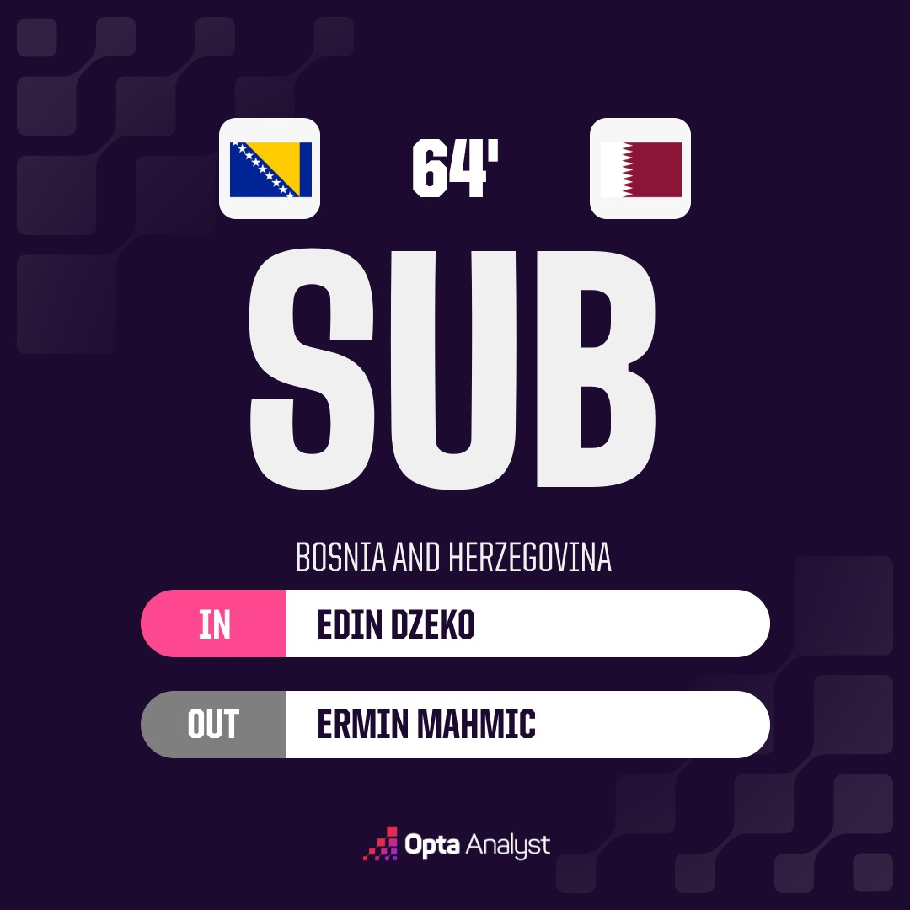
64'
Bosnia are making a tactical change. Nikola Katić is leaving the field and in their place comes Dennis Hadžikadunić – we will soon see if this switch has the desired impact.
61'
Textbook game management from Bosnia after the break. They're stroking the ball around with confidence, making Qatar work for every touch while protecting that precious lead.
60'
Qatar have attempted the last 6 shots in this game, Bosnia-Herzegovina last shot was taken by Edin Džeko in the 38th minute.
60'
A chance goes begging as Akram Afif gets off a shot that does not hit the target. They might have done better with that one, but instead it is a goal-kick to Bosnia.
58'
Despite trailing, Qatar are showing real defensive grit, digging in and stopping further damage as they try to build a platform.
57'
A chance goes begging as Akram Afif gets off a shot that does not hit the target. They might have done better with that one, but instead it is a goal-kick to Bosnia.
56'
A rash challenge from Ahmed Al Ganehi, who sends Sead Kolašinac tumbling, giving Bosnia a free-kick. It is not in a threatening position, but it gives them a chance to get back on the ball.
56'
Substitution. Hassan Al Haydos has to make way, with Ahmed Al Ganehi coming on in their place following an injury. That is going to come as a blow for Qatar. Can they overcome it?
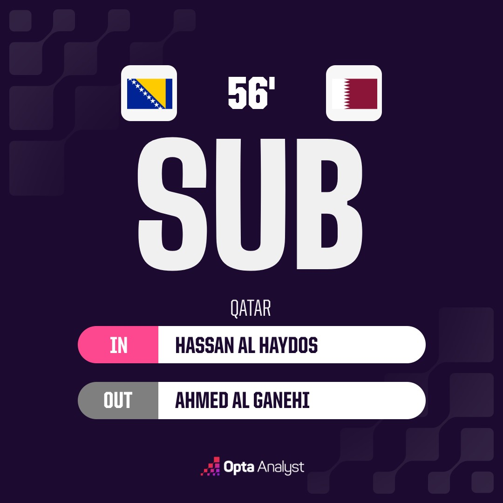
52'
Free-kick! A foul from Abdulaziz Hatem on Benjamin Tahirović. It is well away from Qatar’s goal, so it is unlikely to result in a chance for Bosnia.
47'
A foul from Kerim Alajbegović on Pedro Miguel sees Qatar win a free-kick, but it is not in a dangerous position, so Bosnia should be confident they can defend it easily enough.
47'
Great defending from Bosnia, who are staying organised and winning key battles to preserve their lead.
46'
Substitution! Abdulaziz Hatem replaces Jassem Gaber for Qatar as the manager shuffles the pack. Can Abdulaziz Hatem make an impression as this match continues?
46'
Ivan Šunjić’s match is over as Bosnia decide to make a substitution. Benjamin Tahirović enters the field in what looks like a tactical change.
46'
Bosnia are making a tactical change. Arjan Malić is leaving the field and in their place comes Amar Memić – we will soon see if this switch has the desired impact.
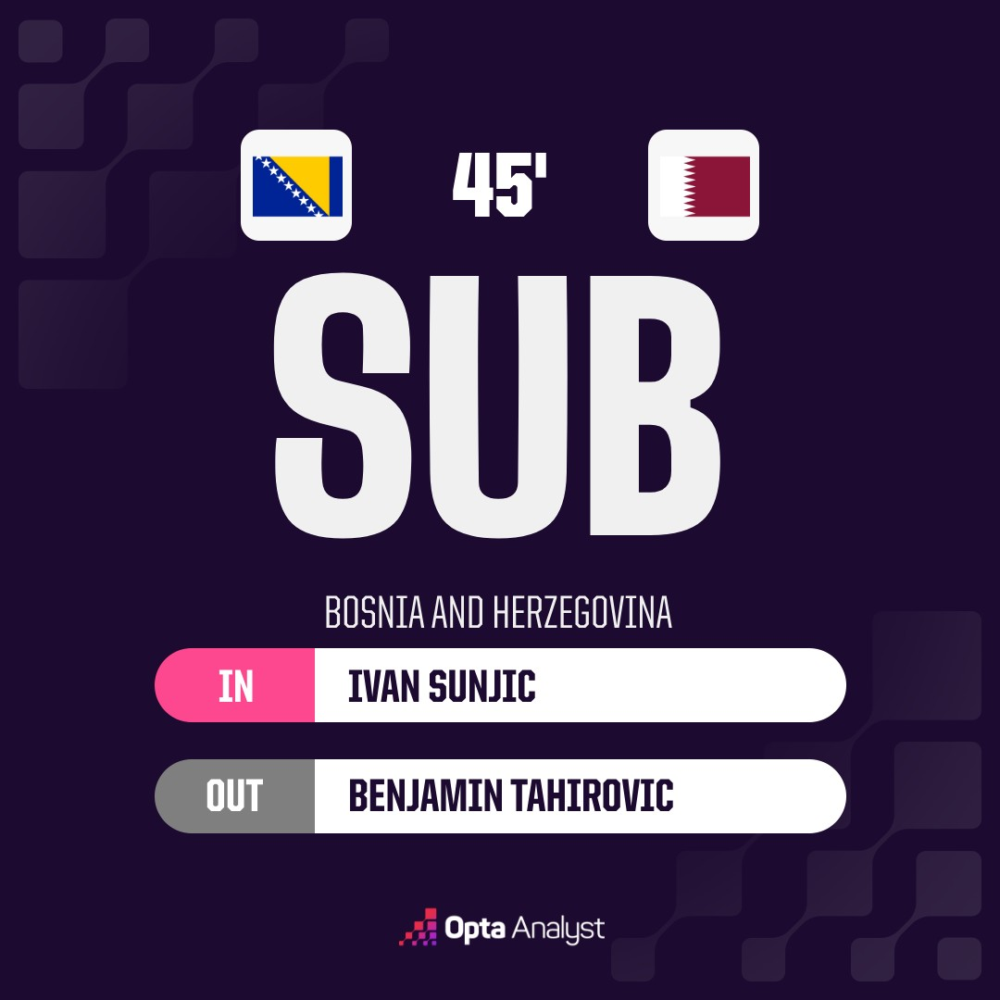
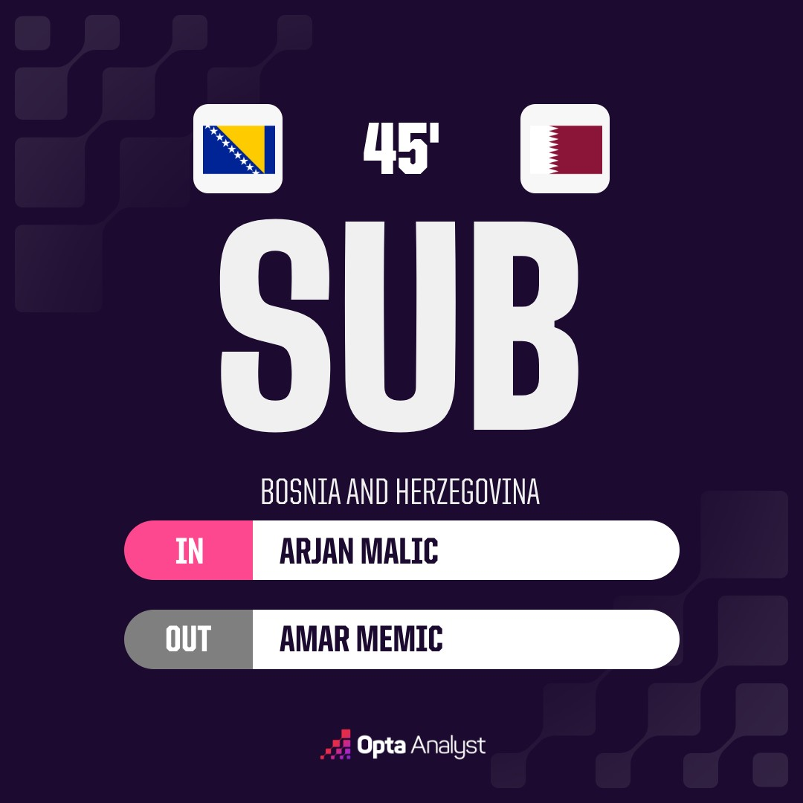
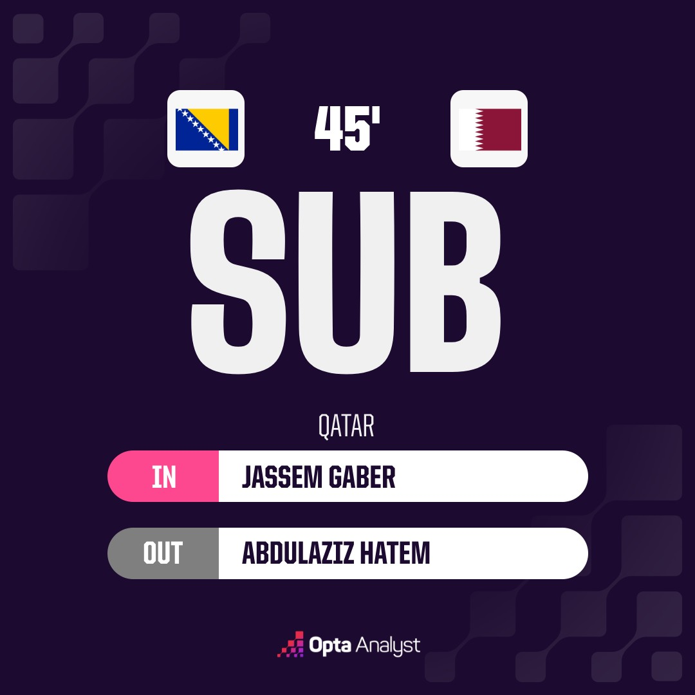
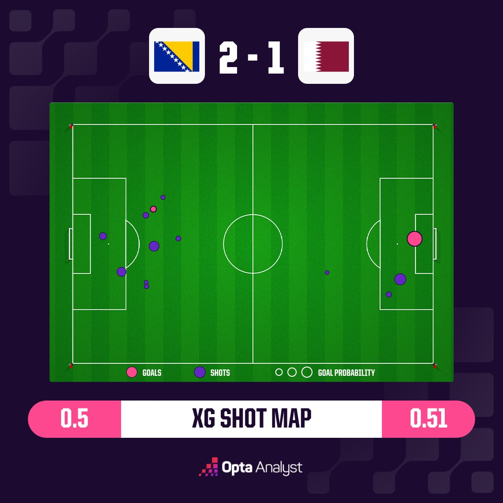
45+6'
The first half comes to a close and it’s Bosnia who have the lead over Qatar at Seattle Stadium, with the scoreline 2-1 at the interval. Will Qatar turn this around after the break?
45+3'
MISS! The score remains 1-2, with Bosnia relieved after Qatar’s Pedro Miguel goes for goal but sends their attempt off target. Not one to write home about, that one.
45+3'
WHAT A MISS! Oh dear, oh dear, that is an awful attempt from Pedro Miguel, as a huge chance for Qatar to score the goal they need goes begging. What a let off for Bosnia, though. They will have to defend better than that from here on out!
45+1'
Ermedin Demirović goes in on Karim Boudiaf and concedes a foul. The free-kick is not in a particularly dangerous area from Bosnia’s viewpoint, though.
45+1'
That is a disappointing effort from Boualem Khoukhi, who went for glory but got their attempt wrong, and the shot sailed off target. A frustrating moment for Qatar.
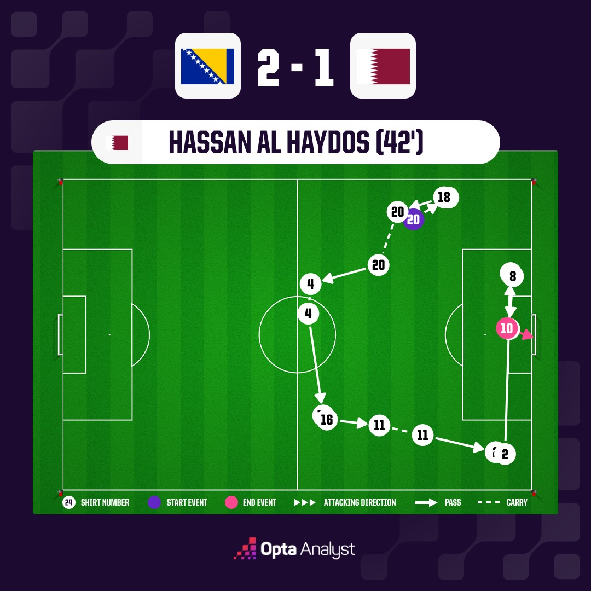
42'
Edmílson Junior has assisted his first goal in the 2026 FIFA World Cup.
42'
GOAL! That makes things interesting! Bosnia’s strong lead does not look so safe anymore, after Hassan Al Haydos’s goal cuts their advantage in half. It is 1-2 and all of a sudden Qatar have their tails up!
42'
Hassan Al Haydos has scored his first goal in the 2026 FIFA World Cup.
41'
Qatar have not had a shot so far in this game.
40'
A rash challenge from Jassem Gaber, who sends Kerim Alajbegović tumbling, giving Bosnia a free-kick. It is not in a threatening position, but it gives them a chance to get back on the ball.
38'
MISS! Edin Džeko fluffs their lines, and will Bosnia-Herzegovina be made to pay for that miss? Qatar could have been down and out if that attempt had gone in, but at least they have not fallen even further behind in this contest.
36'
Hassan Al Haydos goes in on Ivan Bašić and concedes a foul. The free-kick is not in a particularly dangerous area from Qatar’s viewpoint, though.
34'
Own goal! Bosnia extend their lead now, after Mahmud Abunada turns inadvertently into his own net to compound Qatar's frustration. It doesn't look like it is going to be their day.
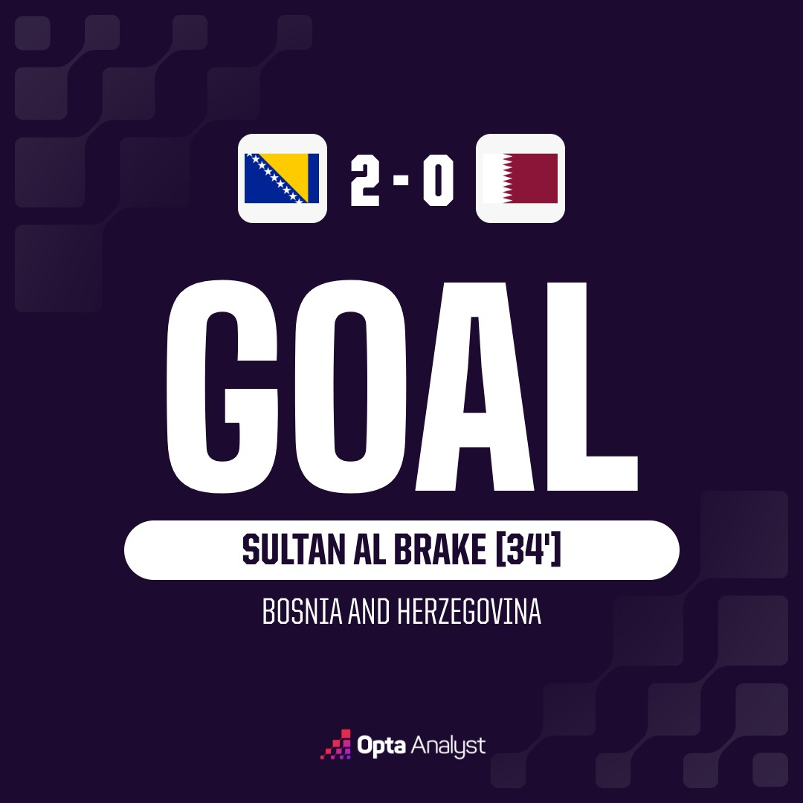
33'
MISS! A shot from Nikola Katić ends up being off target. They might have done a bit better with that one, but it remains Bosnia 1-0 Qatar.
33'
Qatar have a corner to defend now after Ahmed Fathy diverts an attempt from Ivan Bašić out of play. Can Bosnia take this chance to get a good delivery in and really test their opponent’s defence?
29'
Ivan Bašić has assisted his first goal in the 2026 FIFA World Cup.
29'
Kerim Alajbegović has scored his first goal in the 2026 FIFA World Cup.
29'
GOAL! Bosnia are in front! It is a strike from outside the area that has given them the lead, with Kerim Alajbegović getting the goal. It is far from game over yet, but now Bosnia have an advantage that they will try to hold onto.
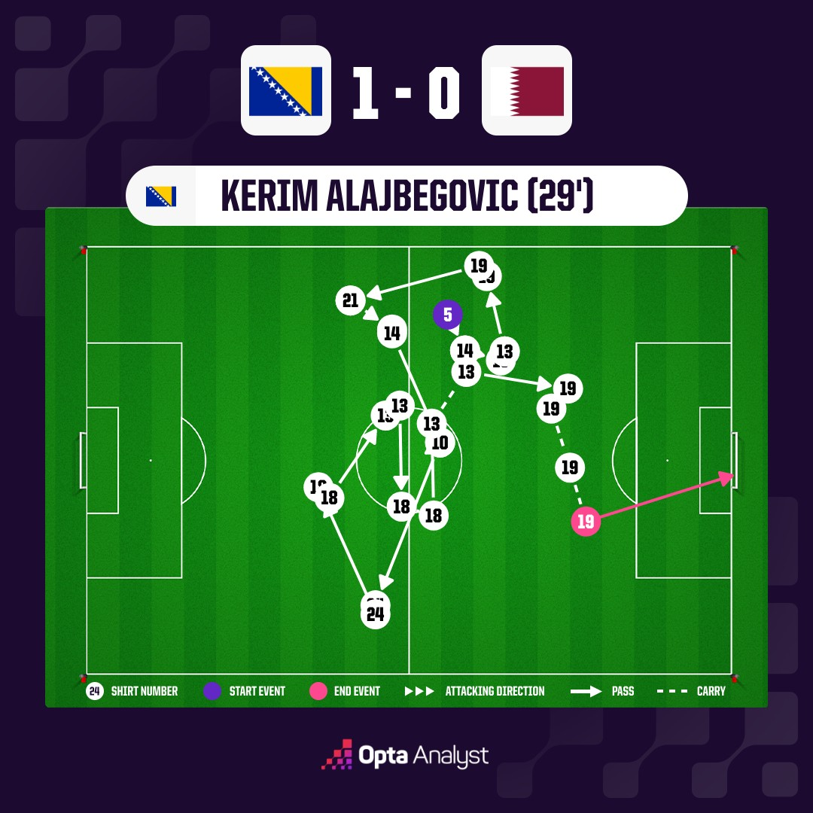
28'
Decision overturned! The referee’s original call is deemed to be wrong by VAR, and after a check, it has been changed. The technology has played a major role there.
28'
We are going to VAR. The game has stopped for now with the assistant referee in the video booth now set to review the incident. Will the decision be altered?
27'
Good play from Kerim Alajbegović, who draws a foul from Jassem Gaber to hand Bosnia a free-kick in a dangerous position. Will they create something from this set-piece?
23'
BLOCK! An intervention from Boualem Khoukhi might have just prevented a goal, with the defending player getting in the way of an attempt from Kerim Alajbegović. Solid defending there!
21'
Can Bosnia make this chance count? They have won a free-kick in a threatening position after a foul from Jassem Gaber on Ivan Bašić. Will Qatar's defence be tested here?
20'
Akram Afif makes a run in behind but the Bosnia defensive line were alert, and stepped up in time to catch them offside. That run just needed to be timed better.
20'
Kerim Alajbegović goes in on Pedro Miguel and concedes a foul. The free-kick is not in a particularly dangerous area from Bosnia’s viewpoint, though.
18'
Ivan Bašić's effort is deflected out for a corner. Can Bosnia make anything of this set-piece?
17'
No luck! Ivan Bašić takes on a shot that, had they got it right, might have been set to test the goalkeeper, but instead it is sent off target and Qatar come away unscathed.
16'
A free-kick to Bosnia, as Jassem Gaber goes in and fouls Kerim Alajbegović. However, Qatar will not mind giving one away in this area too much, with plenty of distance to their goal.
15'
No goalmouth action for some time now, with neither team having had a shot in the past 10 minutes. Will there be a moment that changes things soon? Qatar have seen plenty of the ball, however, with 55 per cent of the possession in their favour during that period.
12'
This could be a chance for Bosnia, after Sultan Al Brake fouls Arjan Malić, handing them a free-kick in a threatening area. A good set-piece from here could really test the Qatar defense!
11'
Edmílson Junior makes a run in behind but the Bosnia defensive line were alert, and stepped up in time to catch them offside. That run just needed to be timed better.
10'
A rash challenge from Ermedin Demirović, who sends Issa Laye tumbling, giving Qatar a free-kick. It is not in a threatening position, but it gives them a chance to get back on the ball.
10'
Arjan Malić goes in on Hassan Al Haydos and concedes a foul. The free-kick is not in a particularly dangerous area from Bosnia’s viewpoint, though.
8'
A chance now for Qatar to get a good delivery into the box, after the ball is diverted behind for a corner. Qatar have been pushing for what would be a key goal, but Bosnia have stood firm so far.
4'
A free-kick to Qatar, as Ivan Šunjić goes in and fouls Akram Afif. However, Bosnia will not mind giving one away in this area too much, with plenty of distance to their goal.
3'
Qatar have a corner to defend now after Mahmud Abunada diverts an attempt from Ivan Šunjić out of play. Can Bosnia take this chance to get a good delivery in and really test their opponent’s defence?
2'
It’s been tight so far, and Qatar are making sure it stays that way with strong defensive discipline and well-timed clearances.
2'
Mahmud Abunada is called into action to keep out a shot from outside the box by Ermedin Demirović. The effort from the Bosnia player was on target, but Qatar shot-stopper got to it.
1'
We are under way as Bosnia kick off at Seattle Stadium. Let's hope an entertaining contest is in store.
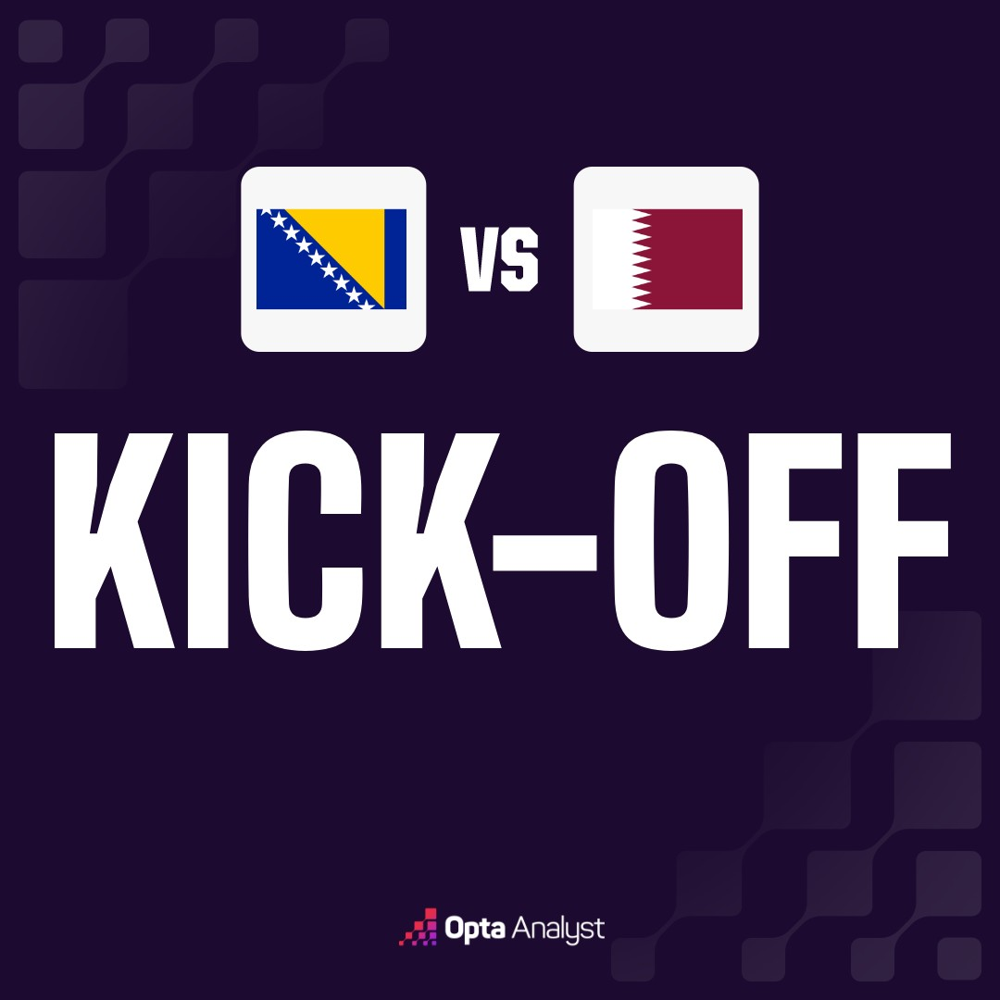
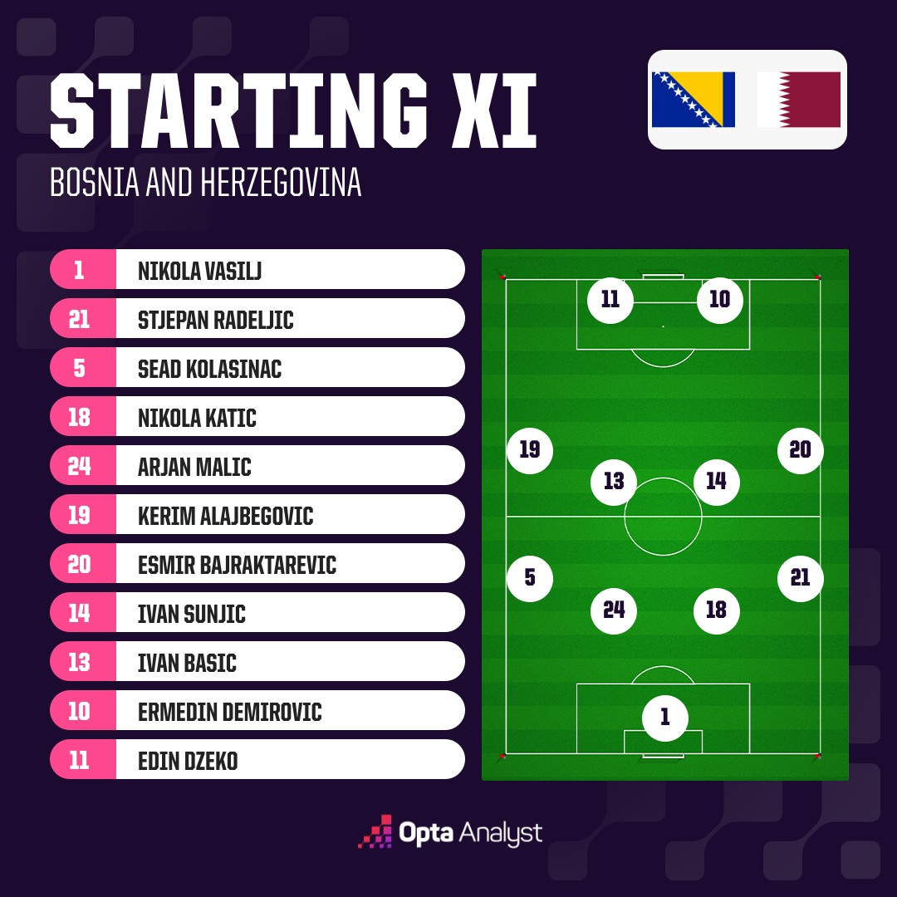
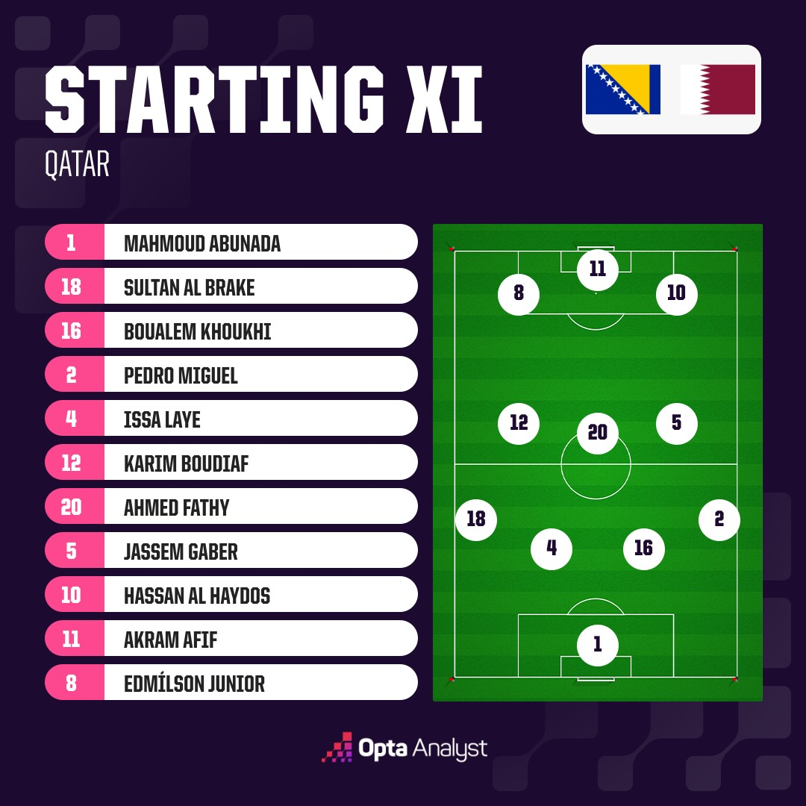
Qatar have won none of their last 11 away matches
Both teams have scored in Bosnia-Herzegovina's last 8 games
Bosnia-Herzegovina are set to play Qatar on Wednesday at Seattle Stadium in the third round of the group stage at the 2026 Canada/Mexico/USA FIFA World Cup.
Bosnia suffered a first competition loss of the campaign following the 4-1 defeat in their last group stage match against Switzerland on June 18. Ermin Mahmic netted in the loss. They are winless in their last four games in all competitions. In six games this year, they have two wins, three draws, and one loss.
Qatar's last group stage game saw them beaten for the first time in the competition this year 6-0 by Canada on June 18 at BC Place Vancouver, extending their winless streak to four. In 2026, they have drawn two and lost two.
Bosnia-Herzegovina and Qatar are third and fourth in the group, respectively, level on one point. Bosnia are currently out of the knockout round places but still on for a place in the round of 32, while Qatar are in line to be eliminated.
Canada are atop the group on four points and are well-positioned to advance to the Round of 32. Switzerland are also in a Round of 32 spot, sitting second on four points.
The clubs played out a 1-1 draw in their last encounter in August 2010.
Jovo Lukic and Mahmic have caught the eye for Bosnia in World Cup play. They are the team's joint top scorers with one goal. Lukic has scored the critical first goal of the match once.
In their last six matches in all competitions, Bosnia have drawn five and lost one. The Bosnian side scored five and conceded eight over that period, scoring first in two of the six contests. They had two first-half goals, while their opponents netted two times in the first 45 minutes. The Qatari side have drawn two and lost three in their last six. The Qatari side scored one and conceded 11 in that period, failing to score first in any of the six. All of their goals came after halftime, while their opponents netted six times before the break.
-
General
Possession 54.4% 54.42745.57345.6% Possession lost in defensive half 22 223232 Possession lost in middle third 40 403838 Duels 75 757171 Duels success rate 56.0% 5639.43739.4% Aerial duels 14 141414 Aerial duels won 71.4% 71.42928.57128.6% Successful dribbles 8 833 Fouls won 14 1499 Offsides 1 133 Corner awarded 5 555 -
Distribution
Passes 515 515434434 Long passes 50 505252 Long passes proportion (%) 9.7% 9.70911.98212.0% Passing accuracy 87.8% 87.76785.48485.5% Passes in opponents' half 224 224216216 Passing accuracy in opponents' half (%) 77.2% 77.23277.31577.3% Total passes in the final third 98 98105105 Passing accuracy in final third (%) 70.4% 70.40871.42971.4% Forward passes 323 323273273 Forward passes (%) 62.7% 62.71862.90362.9% Through balls 4 433 Final third entries 45 454747 Penalty area entries 23 232828 Total open play crosses 15 151515 Crosses 22 221717 Crossing accuracy 13.6% 13.63629.41229.4% -
Attack
Goals 3 311 Shots 14 1499 Shots on target 5 533 Blocked shots 5 500 Headed shots 1 111 Shots outside the box 10 1044 Shots inside the box 4 455 Shots accuracy excluding blocked shots 55.6% 55.55633.33333.3% Shooting accuracy 35.7% 35.71433.33333.3% Key Passes 11 111010 -
Defence
Tackles 10 101313 Tackles success rate 90.0% 9038.46238.5% Clearances 22 222424 Interceptions 4 444 Recoveries 40 403434 Attacking third recovery 2 222 Defensive third recovery 21 211818 Midfield third recovery 17 171414 Recoveries in attacking half (%) 5.0% 55.8825.9% -
Discipline
Fouls conceded 9 91414 Yellow cards 1 111 Red cards 0 000